1. Важные компоненты, подлежащие обязательной проверке
При подозрении на повреждение или Деформация подвески кузова необходимо проверить подвеску автомобиля на стенде для правки кузова и выполнить необходимую коррекцию;
Проверить исправность рулевого управления и рулевых тяг, визуально проверить на отсутствие деформаций и трещин;
Проверить все компоненты шасси;
Проверить колеса и шины на отсутствие повреждений, проверить концентричность и балансировку: проверить протектор и боковины шин на наличие трещин, а также проверить Давление в шинах;
Проверить на отсутствие повреждений узел электропривода, батарею, мосты. После ремонта необходимо провести дорожные испытания автомобиля для определения безопасности движения и соответствия характеристик безопасности стандартам.
Если автомобиль подверглся значительным нагрузкам, необходимо проверить вышеуказанные компоненты и одновременно выполнить проверку углов установки колес.
2. Измерения
Перед демонтажем и резкой следует выполнить измерения по чертежам размеров кузова, используя тяговые устройства для выправления поврежденного кузова или рамы.
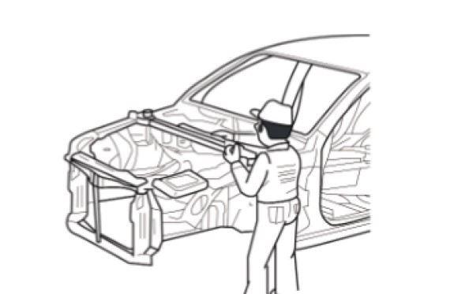
3. Демонтаж
Зоны резки
A — Допустимые зоны резки
B — Зоны изгиба
C — Усилители
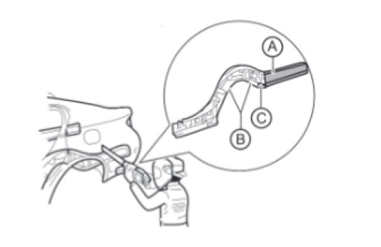
Резку необходимо выполнять строго на прямолинейных участках, избегая резки в зонах усилителей.
Резка влияет на жесткость кузова, поэтому в соответствии с положениями ремонтной документации необходимо принять надежные и безопасные меры.
Запрещается выполнять сверление или резку в зонах прокладки жгутов проводов. Перед резкой и сверлением необходимо убедиться в отсутствии повреждений шлангов и проводов.
При демонтаже соседних компонентов необходимо наклеить защитную ленту вокруг кузова и на инструмент во избежание повреждения деталей.
4. Подготовка к установке
Требования к точечной сварке: как правило, если общая толщина свариваемых панелей a превышает 3 mm, для электрозаклепочной сварки следует использовать аппарат MIG. При толщине стальных панелей более 3 mm точечная сварка не может гарантировать Долговечность соединения;
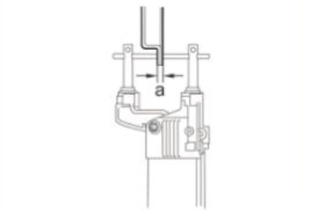
Удалить лакокрасочное покрытие с нового свариваемого компонента и кузова, после чего нанести герметик для точечной сварки (или грунтовочный состав для сварки);
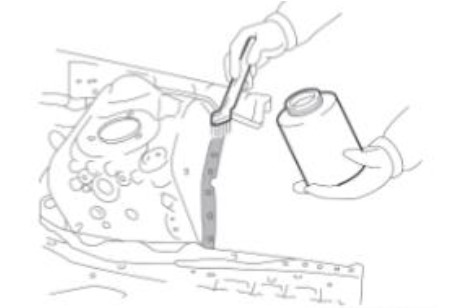
На участках, где точечная сварка невозможна или толщина металла слишком велика, предварительно выполнить отверстия с помощью просекателя или сверла, а затем выполнить электрозаклепочную сварку.
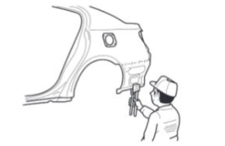
|
Толщина свариваемых деталей |
Размер отверстия для электрозаклепочной сварки (mm) |
|
Не более 1.6 |
Φ6 |
|
Более 1.6 |
Φ8 |
Меры предосторожности при работе с электронными компонентами:
Во время сварки электронные компоненты могут быть повреждены током сварочного аппарата, протекающим через кузов;
Перед началом сварки необходимо отсоединить клемму жгута проводов отрицательной клеммы аккумуляторной батареи и обеспечить Заземление вблизи места сварки на кузове;
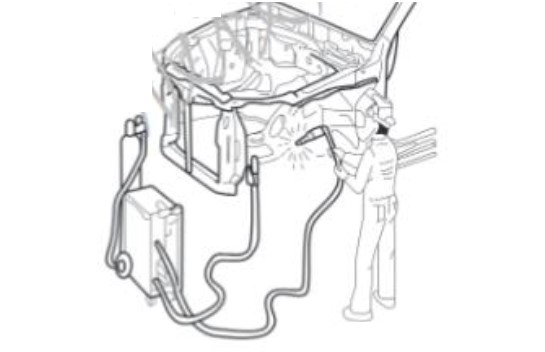
Требования к зоне резки: использовать ремонтный Инструмент А: пневматическая пила; ширина зоны резки a: 20–30 mm;
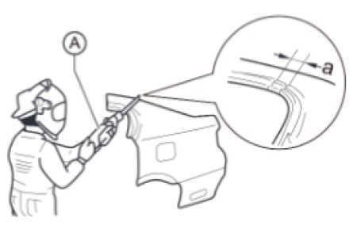
Выполнить черновую резку новой детали в зоне соединения, при этом на участке a необходимо оставить припуск на нахлест 20–30 mm.
5. Установка
Измерения перед сваркой:
Перед установкой нового компонента необходимо выполнить измерения в соответствии с чертежом размеров кузова для обеспечения правильной сборки;
После завершения установки подтвердить правильность сборки.
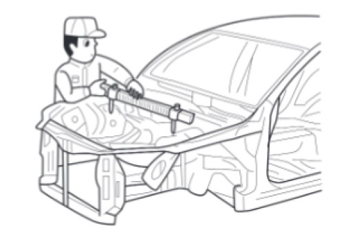
Меры предосторожности при сварке:
Точечная сварка: обычно количество точек составляет 1.3 от исходного заводского количества точек;
Электрозаклепочная сварка: обычно количество точек больше исходного заводского;
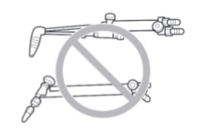
Наплавочные работы следует выполнять с помощью сварочного аппарата MIG (полуавтоматическая сварка в среде инертного газа). Запрещается применять газовую сварку или наплавку на участках кузова, не предусмотренных для этого.
Меры предосторожности при зачитке после сварки:
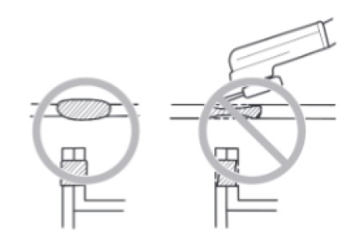
После сварки необходимо проверить сварные швы для обеспечения надежности соединения;
При зачистке зоны сварки угловой шлифмашиной не допускайте чрезмерного сошлифовывания металла, так как это снизит прочность сварного соединения.
Расположение точек точечной сварки:
A — Расположение старых точек сварки
B — Расположение новых точек сварки
Избегать наложения новых сварных точек на зоны литых ядер старых точек.
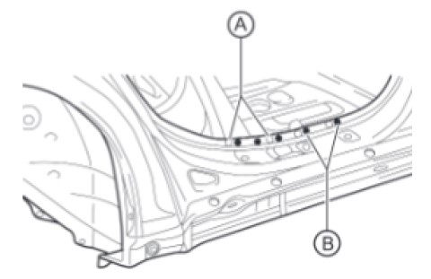